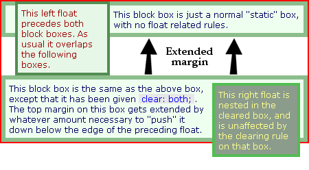

When a float is contained within a container box that has a visible border or background, that float does not automatically force the container's bottom edge down as the float is made taller. Instead the float is ignored by the container and will hang down out of the container bottom like a flag. Those familiar only with Internet Explorer may scratch their heads and say That's not right True, IE/Win does enclose a float within a container automatically, however it will if the container element happens to possess the MS-only quality called hasLayout.
This float-enclosing behavior in IE can also be toggled off again just by hovering of links within the container, if that hovering alters either the link background or one of several other CSS properties. Quite a mess, which we have seen in the Guillotine Bug section.
Cleared elements; as we seen earlier in the things to know section; reference adding additional structural markup. without the additional structural markup, - such a cleared box cannot be at the same horizontal level as a preceding float. It must appear just below that level. The image shows how this might look, with a red border representing the container element:
The standard method of making an outer container appear to enclose a nested float is to place a cleared element last in the container, which has the effect of 'dragging' the lower edge of the containing box lower than the float. Thus the float appears to be enclosed within the container even though it really isn't. The code for a cleared box usually looks something like this:
<div> <!-- float container -->
<div style="float:left; width:30%;"><p>Some content</p></div>
<p>Text not inside the float</p>
<div style="clear:both;"></div>
</div>
The concern or issue with this approach is that this method is not intuitive, requiring an extra element to be added to the structural markup. Oce of the major premises of CSS is that it should help to reduce the bloated structural markup used in presentation. The idea of adding markup just so floats may be kept within containers, essentially re-bloats the page markup.
In this approach, no clearing element is required. also the approach does not affect IE.
In CSS2 the :after psuedoclass allows for extra content to be added at the end of a element. This means no actual markup is needed in the (X)HTML. the content is specified from within the Stylesheet, and it appears in the page as would a (X)HTML element being inserted following the target element. This implies that the :after generated conetent cannot receive some CSS properties such as 'table', 'float', 'list', or 'position' properties. However, the 'clear' property is permitted.
The approach we will use with the :after that will insert a simple character such as a 'period' followed by providing the generated element style {clear:both;}. Essentially at a minimum, that is all that is required, however no one wants a line space meesing the end of their container box that is now fairly clean. so in this case we will also {height: 0;} and {visibility: hidden;} to prevent the period from showing. Here is an example:
.clearfix:after {
content: ".";
display: block;
height: 0;
clear: both;
visibility: hidden;
}
In observing the above example: you may have noticed that {display: block;} is also applied to the :after element, the reason for this: if the style is not present and the element is of the inline flavor - then that element defaults to inline, and cannot receive the 'clear' property. NOTE: if the choice is to use the {overflow: hidden;} to hide the period - then some browsers may actually render the period.
Internet Explore 6 and 7, do not support the :after psuedoclass, then we are put into a position to be dependent on the same auto-clearing effect in IE6, and this behavior happens when the float containing the elements receives a hasLayout applied to it. the solution can be adjusted with a simple declaration of {zoom:1;} will perform this adjustment to IE5.5 and above, however it is proprietary to IE and needs to be hidden within IE conditional comments in order to validate.
As we previously seen in the Guillotine Bug, Internet Explorer does have some special needs with respect to the Auto-enclosing behavior. Reminder: The container element has links inside followed by a float, adding :hover psuedoclass may introduce the toggling of hasLayout causing the the lower edge of the container box to suddenly jump up and cut-off floated content.
The second example has been corrected by placing those links in a div, which then gets the zoom fix applied to it. Any block element will work here. Yes, this means another element is needed, however unlike a clearing element used previously, this div is a semantic element. Text content really ought to be wrapped in semantic containers to begin with, and since we forward-thinking coders always have our content thusly contained, it's easy to apply the same .clearfix class to one more element.
So far we are looking like we have everything, however - wevery version of IE does have its own way of doing things. In this case IE 5.5 Win/Mac does not auto-clear and it also does not support the :after psuedoclass. Our current solion works for almost everything except to really make it pretty we need just one more thing. Just apply a {display: inline-block;} (solution found in csscreator)- followed by resetting the display in the HTML. So here is the solution.
First we add the code to the stylesheet itself. Notice we added a little something for IE/Mac:
.clearfix:after {
content: ".";
display: block;
height: 0;
clear: both;
visibility: hidden;
}
.clearfix {display: inline-block;} /* for IE/Mac */
In the (X)HTML we add our conditional comment to address the IE specific issue.:
<!--[if lte IE 7]>
<style type='text/css'>
/* Only IE can see inside the conditional comment and read this CSS rule. */
/* Don't ever use a normal HTML comment inside the CC or it will close prematurely. */
.clearfix {
zoom: 1; /* triggers hasLayout */
display: block; /* resets display for IE/Win */
}
</style>
<![endif]-->